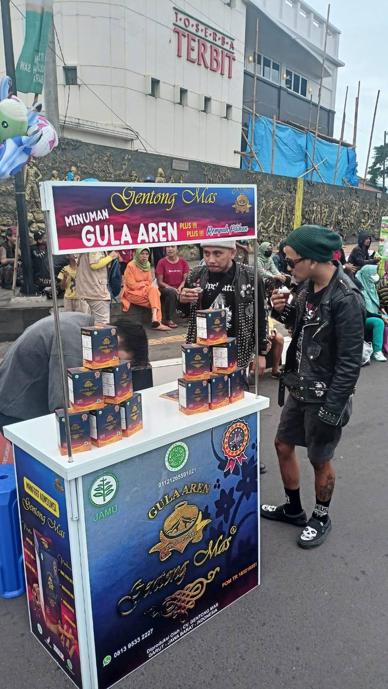

Ponpes Sadang Lebak, yang terletak di Kampung Sadang Lebak, Desa Situsari, Kecamatan Karangpawitan, Garut, telah memproduksi minuman herbal Gentong Mas sejak tahun 2003. Berbahan dasar gula merah dan jintan hitam (habbatussauda), Gentong Mas dikenal bermanfaat untuk menjaga kesehatan dan membantu mencegah berbagai penyakit.
“Saya membuat pabrik ini untuk membantu orang-orang tidak mampu agar bisa mengaji di pesantren kami. Santri di sini gratis, termasuk listrik, makan, dan biaya kesehatan.”
— KH. Aceng Hasan, Pengasuh Ponpes Sadang Lebak
Usaha Gentong Mas yang dikelola oleh PT Gentong Mas telah menjangkau seluruh Indonesia, termasuk segmen apotek.
Gentong Mas juga telah mengantongi izin edar dari BPOM dan sertifikat halal dari MUI. Produk ini tidak mengandung bahan pengawet dan masa kedaluwarsanya bisa mencapai dua tahun.
Bahan baku seperti gula aren, habbatussauda, lada hitam, kapol, kayu manis, dan bunga lawang diperoleh dari petani lokal Garut, sekaligus turut memberdayakan ekonomi sekitar.
Khasiat Gentong Mas antara lain:
Keunggulan Gentong Mas menarik perhatian Atalia Praratya Ridwan Kamil, Ketua Dekranasda Jawa Barat. Dalam kunjungannya ke pabrik Gentong Mas pada 24 Desember 2020, ia mengapresiasi kemandirian ekonomi pesantren Sadang Lebak.
“Pesantren ini tidak mengandalkan bantuan luar, tapi membangun kemandirian melalui usaha nyata seperti Gentong Mas. Ini bisa jadi contoh pesantren ekonomi mandiri di Jawa Barat.”
— Atalia Praratya, Ketua Dekranasda Jabar
Dengan dukungan Dekranasda dan pemerintah daerah, produk Gentong Mas diharapkan dapat menjangkau pasar yang lebih luas dan menjadi simbol keberhasilan pesantren berbasis kemandirian ekonomi dan inovasi herbal nusantara.